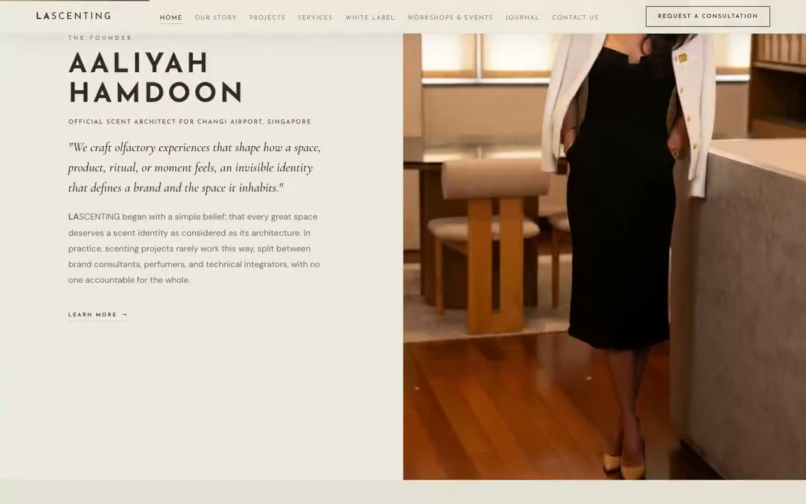
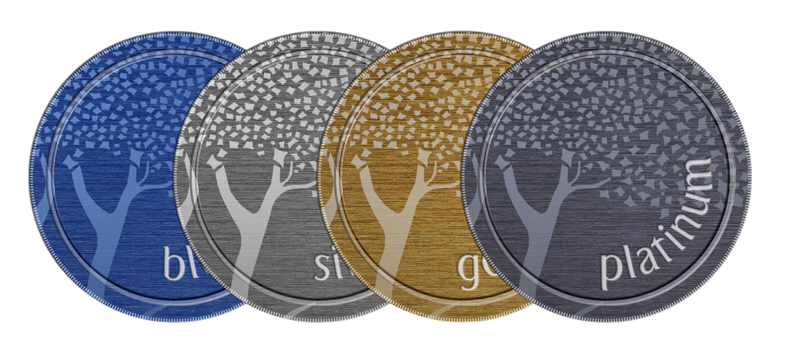
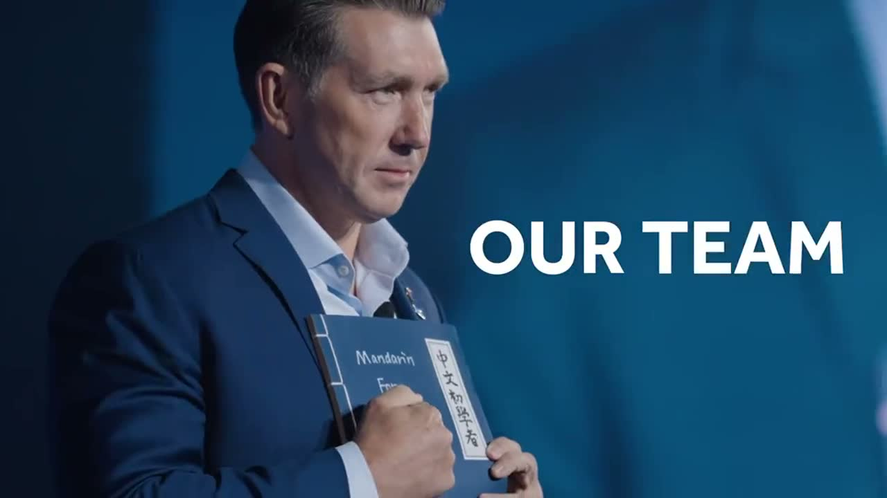
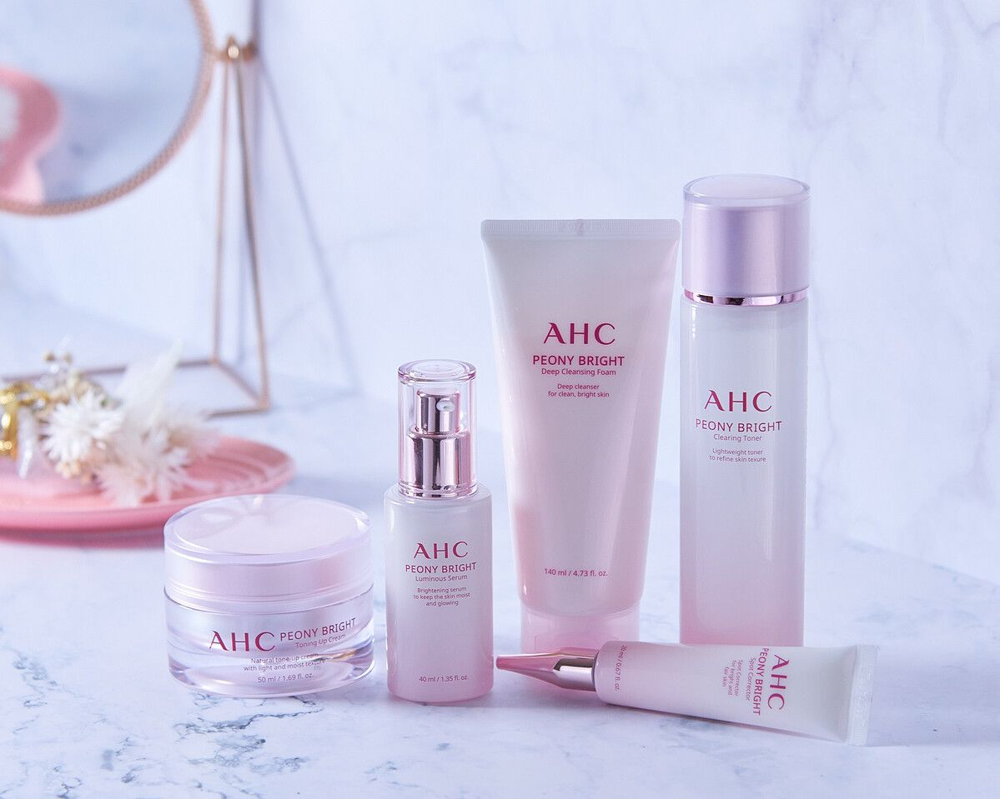
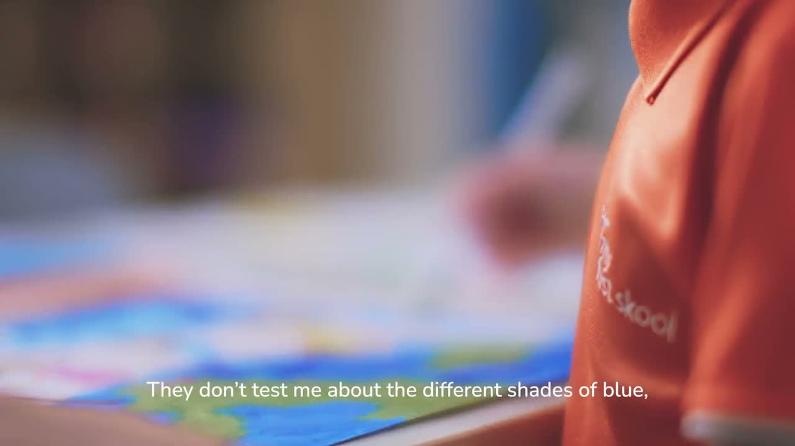
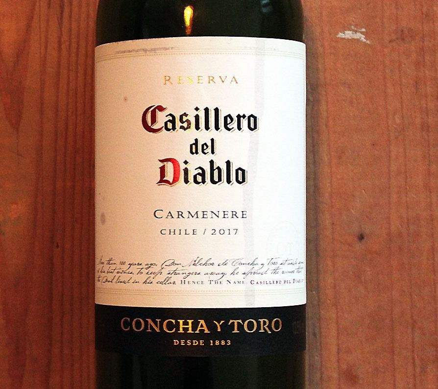
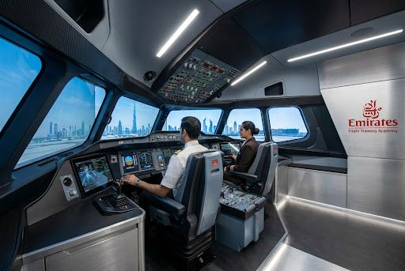

The work, sorted by what I did.
Recent builds first, then 20+ years of campaigns, launches and large-scale events across Asia and the Middle East. Filter by the part I played: the plan, the words or the build.
01
LA ScentingDesign, build and content
Livelascenting.com
WriteBuild
 03
Emirates Skywards Tier AdvancementLoyalty and CRM lead
USD 2M+incremental revenue
Plan
03
Emirates Skywards Tier AdvancementLoyalty and CRM lead
USD 2M+incremental revenue
Plan

02 GSG25: book, exhibition and siteWriter, designer, developer and project manager Book + siteglobalschools.com/gsg25 PlanWriteBuild
03
Emirates Skywards Tier AdvancementLoyalty and CRM lead
USD 2M+incremental revenue
Plan

04 Hilton APAC GM and Commercial ConferenceStrategy and comms lead 92%delegate engagement, a record PlanWrite
05 AHC Skincare: SEA expansionSenior strategic lead 4% → 22%ecommerce share, four markets Plan
06 NTUC My First Skool: site and campaignProject owner and copywriter +39%child registrations in four months WriteBuild
07 Casillero del Diablo: Legendary PairingsLocalisation strategy lead +23%online sales Plan
08 Emirates Flight Training AcademyClient-side brand lead 100%first cohort filled in under two months Plan
09 Malaysia Airlines: This is Malaysian hospitalityProject director and strategist BronzeKancil Awards 2023 Plan 10 Emirates Pilot RecruitmentCampaign and production lead 1,200+applications Plan 11 Emirates Skywards: My FamilyProject and digital lead Liveshipped end to end, still live PlanBuild 12 The UOB GalleryStrategy and comms lead 90 yrsof heritage, opened on time PlanWrite